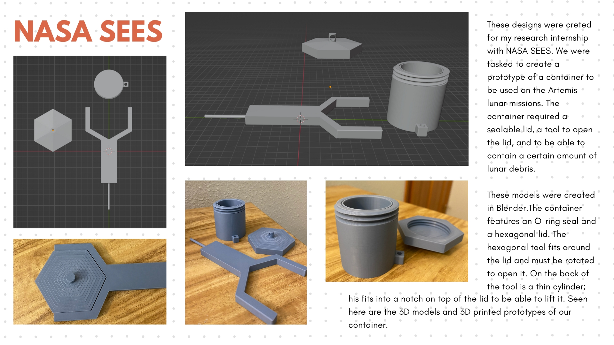

Research Intern at NASA
Back to Projects

For my research internship with NASA SEES in the summer after my junior year, we were tasked with creating a prototype of a container to collect samples on the Artemis lunar missions. The container needed a sealable lid, a tool to open the lid, and enough capacity to hold a set amount of lunar debris.
I modeled the container in Blender. It features an O-ring seal and a hexagonal lid. The hexagonal tool fits around the lid and is rotated to open it, and a thin cylinder on the back of the tool fits into a notch on top of the lid to lift it off.
I 3D printed the model and presented it at the NASA symposium. For this accomplishment, my name will be printed on a patch attached to the Artemis lunar shuttle.